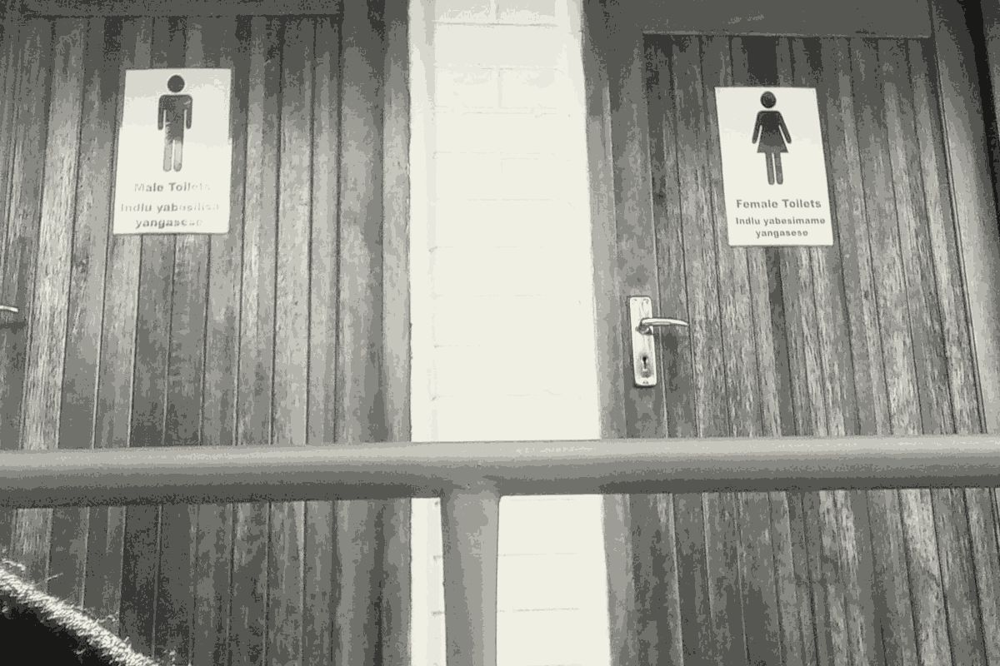

Still working on responsiveness. See end for todo.

Free State
Limpopo
Kwazulu Natal
Male
Female
Inside
Outside
Both
Has Access
No Access
Usable
Unusable
Has toilet paper
No toilet paper
Has soap
No soap
Dirty toilet
Dirty seat
Dirty wall
Seven clinics in Limpopo had some sort of pit latrine.
Broken bathrooms were experienced much more in KZN and Limpopo than in the Free State.
FS
LP
KZN
What we did
To better understand the state of sanitation in our primary healthcare system, we asked our network of community journalists to tell us what the bathrooms are like in their local clinics. We also also asked them to interview people who had recently used the clinics.
They visited 31 clinics in 3 provinces
And interviewed 313 recent users of those clinics.
Interviewees were fairly evenly split between age and gender.
Many clinics in Limpopo and KZN rely on outdoor facilities.
But while all the clinics we visited in the Free State had bathrooms inside the clinics, they were also the least accessible to patients with a disability.
75.4% of people we spoke to said that at some point, the toilets had been out of order when then visited the clinic.
Even when patients could visit the bathroom, however, both male and female toilets were unlikely to be stocked with basics such as toilet paper or soap.
Unsurprising, then, that our CJs found the state of the toilets to be very unhygienic, with urine or feacal matter on the seats in 13 clinics, including nine in Limpopo.
In addition to the basic state of hygiene, in some larger facilities our reporters witnessed people queuing for up to an hour to use the bathroom.
No wonder then that so many people told us that they didn’t feel safe using the toilets.
This included more than half of all women interviewed. Surprisingly, two thirds of 18-25-year-olds said they didn’t feel safe, compared to around 40% of those aged 26-40 or older than 60.
Apart from the obvious implications to health, and our expectations of germ control in a medical centre, 83 patients we spoke to told us that the state of the bathrooms put them off visiting again. The implications of this - people avoiding primary health care facilities - are severe.